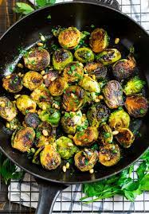

Brussel Sprouts!
Back to homepage

Description
Hailing from the fields of the United States, brussel sprouts has got to be one of the most misunderstood vegetables of modern mankind.
Too many times do I hear children say "they don't like bruseel sprouts, wah wah". But in fact, it's because most people don't actually know how to cook them properly!
In this recipe, I'll show you how to make brussel sprouts actually taste GOOD. And it only takes less than 10 minutes to complete.
Steps
- Wash and cut off the stems of your brussel sprouts.
- Cut each sprout in half. If they're too big, cut them into quarters.
- Place into a mixing bowl and season with salt, pepper, garlic powder, and a little bit of oil. Mix well.
- Oil up a pan, and place sprouts inside alongside half a cup of water.
- Cover the pan and let sprouts steam for 5 minutes - or until you see smoke coming out.
- Uncover the pan and mix well until water is gone from pan & sprouts are well cooked.
- I like to have the sprouts be a little crispy, so leaving them in the pan for a little longer may be a good idea.